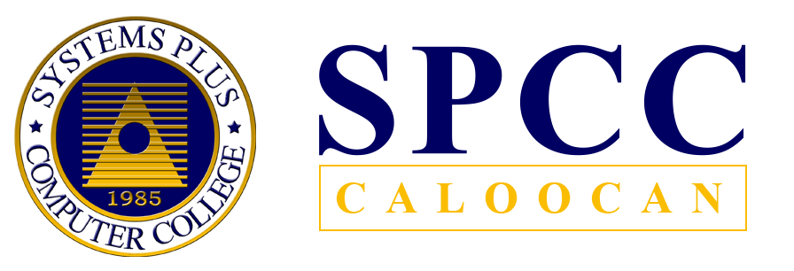

THE ICT ANDHUMSS WEEK-BENCH YELL EVENT
Brief Introduction: The Systems Plus Computer College has a lot of activities going on during the ICT AND HUMSS WEEK. One of the multiple activities is called the "Bench Yell", and in this activity, the students are grouped by their sections, each section should represent a minimum of 6 minutes long of a bench yell.
